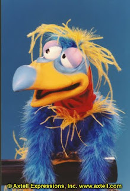

Travel Size Practice Dummy
10/19/2010
{kind=link}

Question: I need a travel size dummy for practice. Any ideas?
* * * *
From Mr. D: How about one of the Axtell Birds? The Dodo (shown here) was my personal favorite. It packs very small; plays big, and is useful long term as a complimentary variety puppet to a full size traditional "hard" figure. A figure of this type is more than a "practice" figure. It can be used on future shows with great effectiveness. A wise $$ investment, in my opinion.
* * * *
From Mr. D: How about one of the Axtell Birds? The Dodo (shown here) was my personal favorite. It packs very small; plays big, and is useful long term as a complimentary variety puppet to a full size traditional "hard" figure. A figure of this type is more than a "practice" figure. It can be used on future shows with great effectiveness. A wise $$ investment, in my opinion.
And then there are my own Ventrilo-etts. (hint, hint :-) Low cost "dummy" with hard figure type operation (headpost with lever for mouth operation), and also "plays big (you'll be surprised!) and packs small".